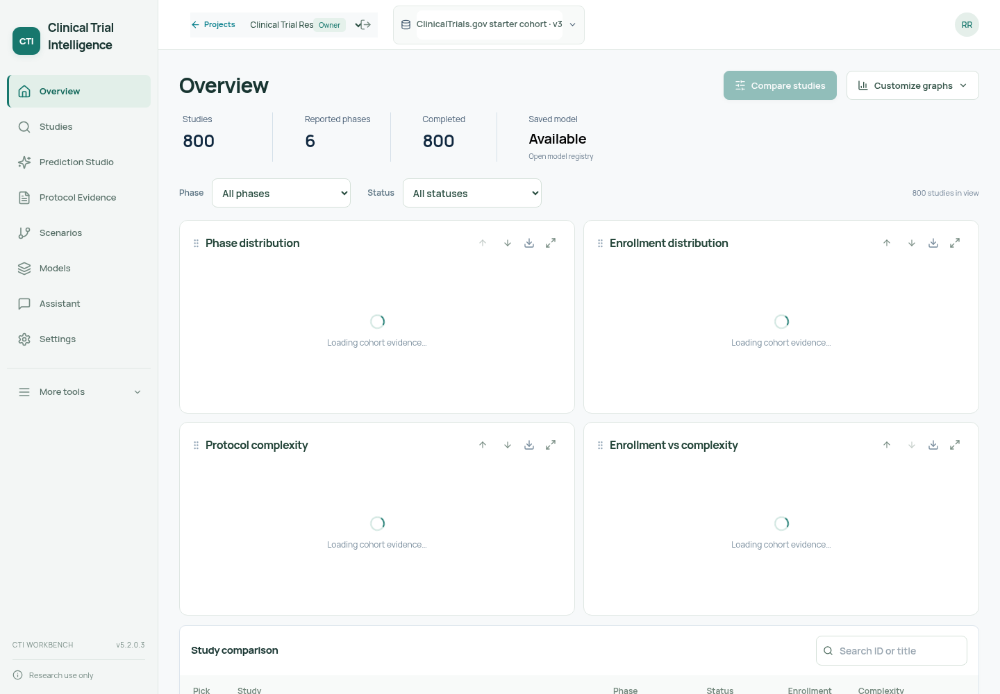
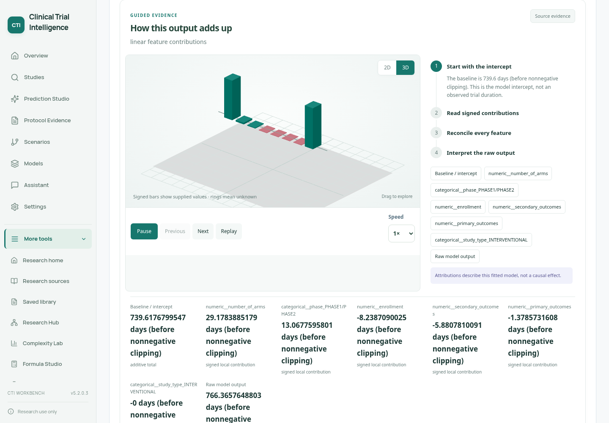
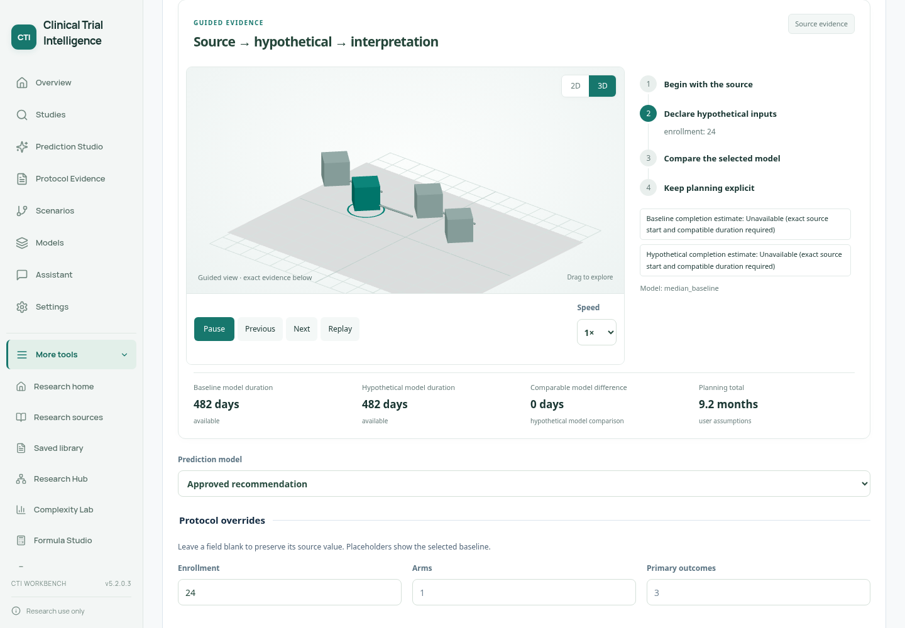
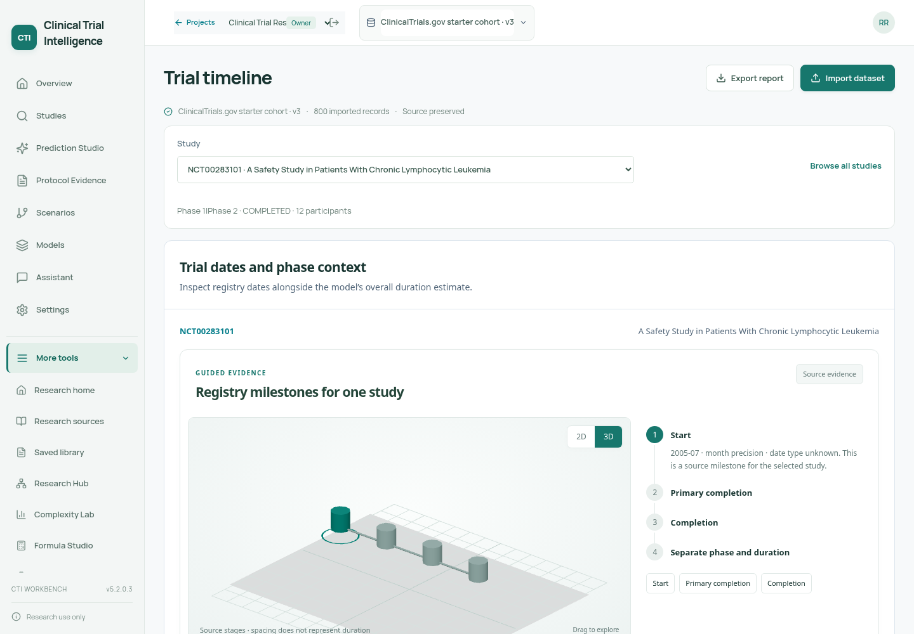
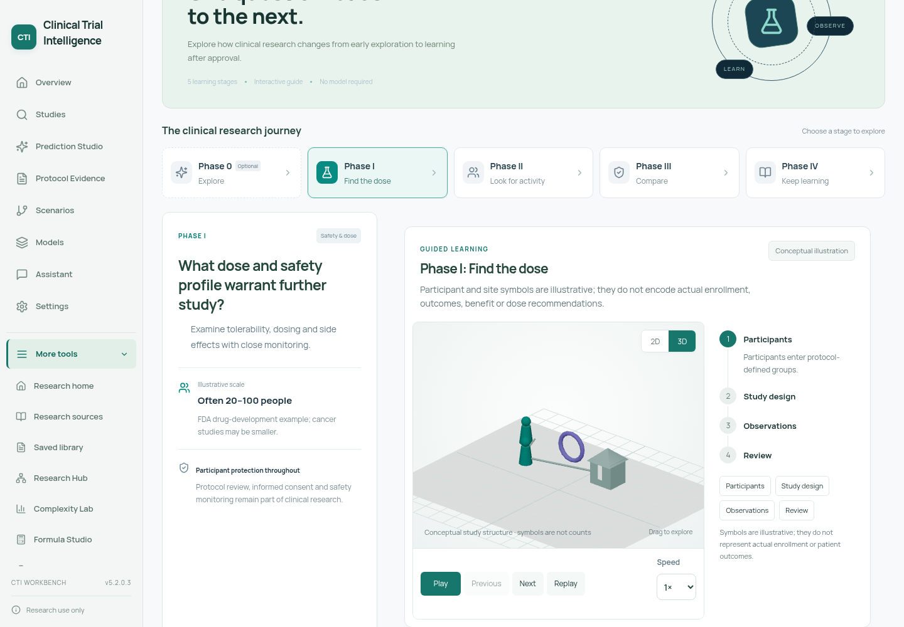
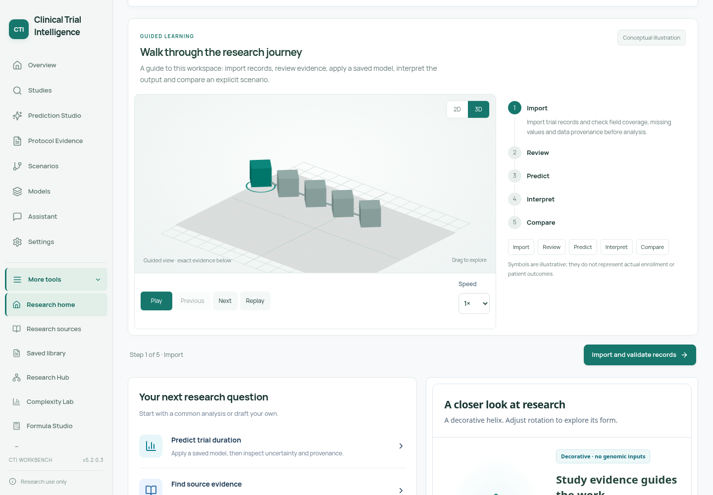
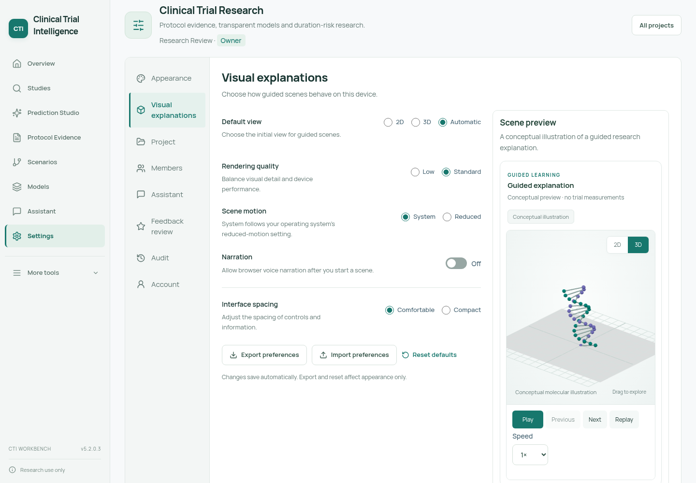
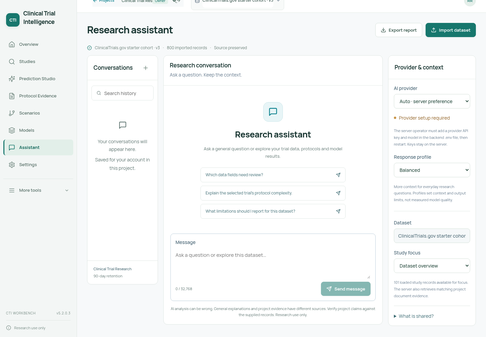

v5.2.0.3 · actual running application with the 800-record public registry starter. Screenshots and a silent UI walkthrough. Open the project locally for interactive 3D controls and predictions.







